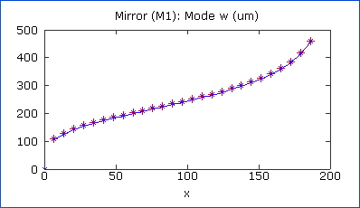

An Optic Graph displays the evolution of a parameter from the selected optic as a function of a variable. For the graph to be useful, one or more system or optic property should be defined as an equation including the selected ordinate variable.
To create an optic graph, the optic whose property is to be graphed must be selected in the Canvas window. If you wish to examine the properties at a specific location within the cavity, you can insert a Screen at that location, and create an Optic Plot of its properties.

To change the optic property being graphed, click on the graph title and select the desired property from the popup menu. Or, select it from the Optic Property list in the Property Manager.
To change the variable against which the property should be plotted, click on the X-axis label and select the desired variable from the popup menu. Or, select it from the Ordinate Variable list in the Property Manager.
The X-axis range does not automatically change when the variable range is changed in the Property Manager. To update the graph to show the entire span of the variable range, click on the ordinate variable radio button.
| Property | Description |
| Optic Property | Specifies which system property value should be plotted on the Y-axis. See table below. |
| Ordinate Variable | Specifies the variable against which the optic property should be plotted. Any of the LaserCanvas variables can be used. |
| X-Axis Range | Specifies the minimum and maximum of the horizontal (ordinate variable) axis. |
| Y-Axis Range | Specifies the minimum and maximum of the vertical (optic property) axis. |
| Points | Gives the number of points that should be plotted. The number of points is the same for all graphs that plot the same LaserCanvas variable. Note that specifying a large point number can lead to increased calculation times and an unresponsive interface. |
The Optic Property can be one of the following. The mode properties refer to the mode just after the optic.
| Optic Property | Description |
| Mode w (um) | The size of the laser mode at the selected optic, in µm. |
| Curvature R (mm) | The radius of curvature of the wave front at the optic, in mm. |
| Waist w0 (um) | The size of the waist nearest the optic, in µm. Note that the waist is not necessarily be physically present, because it could be “behind” the optic, or the mode could be modified by another optic before the waist is reached. |
| Distance z0 (mm) | The distance from the optic to the nearest waist, in mm. See notes to the Waist property, above. |
| Rayleigh zR (mm) | The Rayleigh length of the mode, in mm. |
| Astigmatism (mm) | The distance between the waists in the sagittal and tangential planes. See notes to the Waist property, above. |
For the Astigmatism property, the Optic Graph displays a single line. For the remaining properties, two lines are shown for the sagittal (red) and tangential (blue) planes.